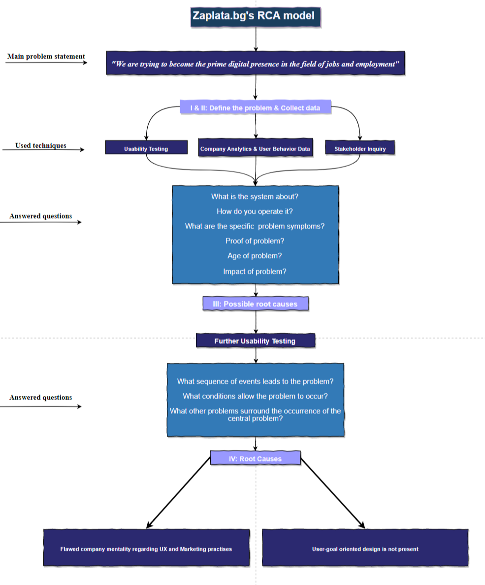
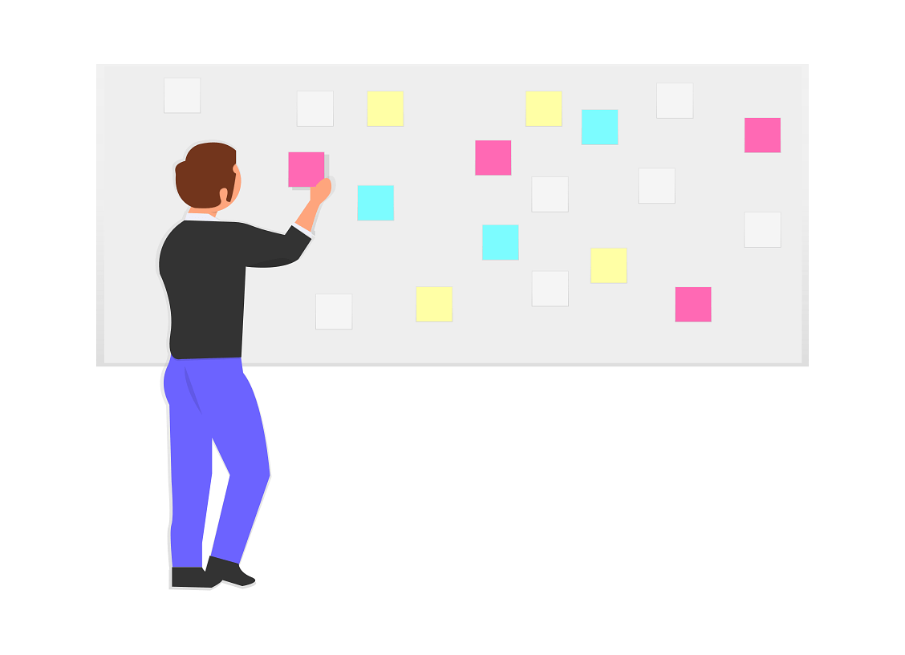
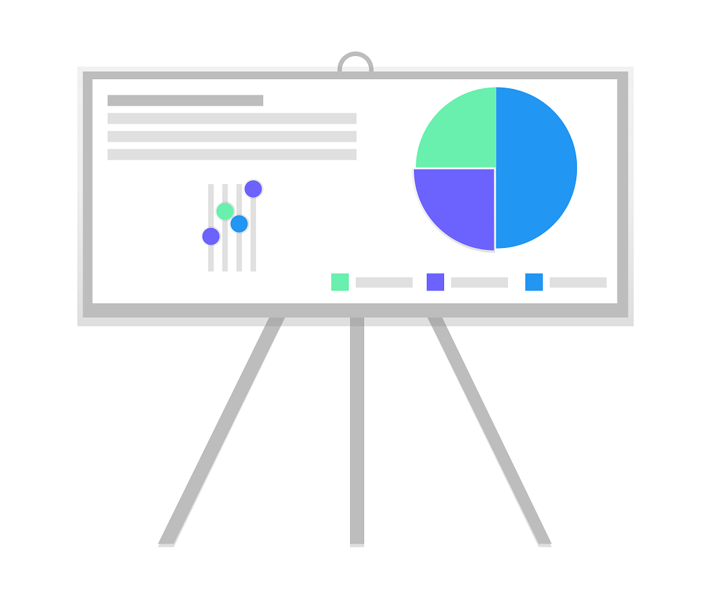
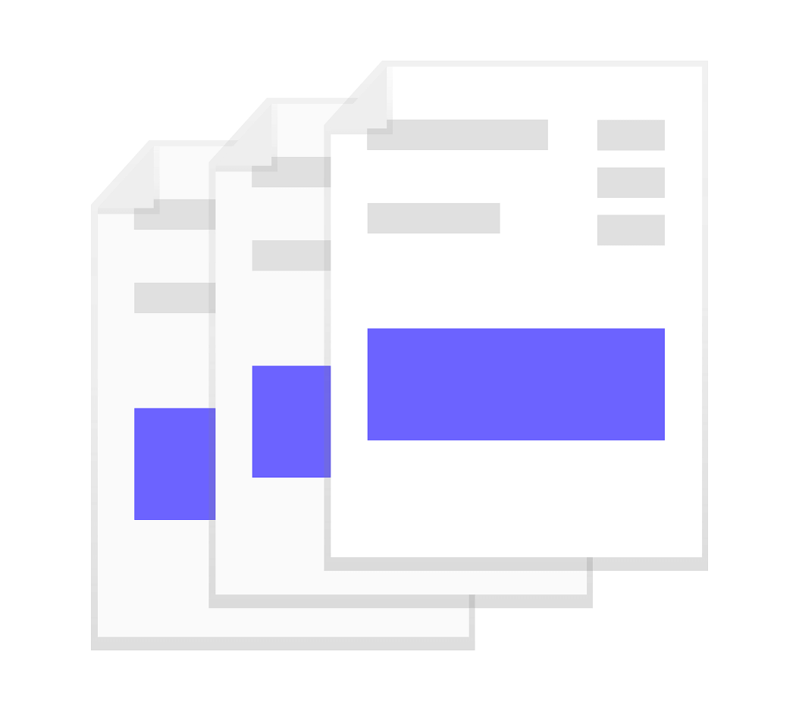
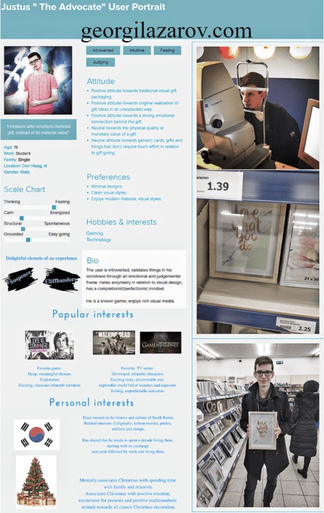
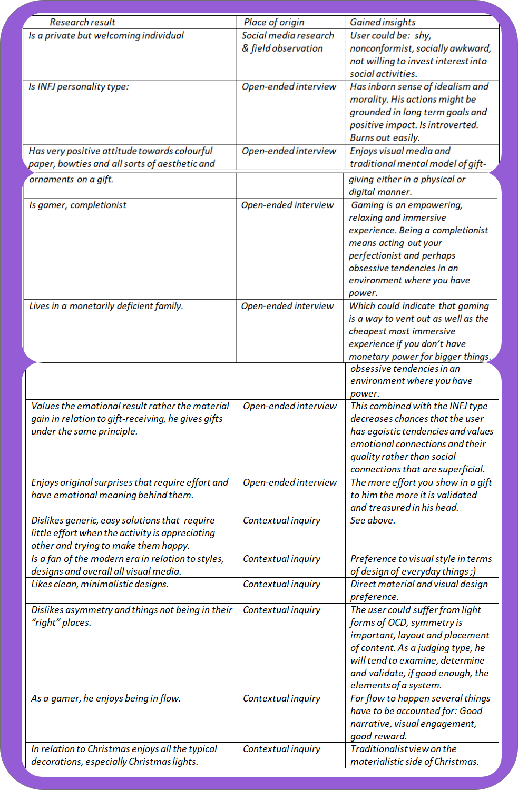
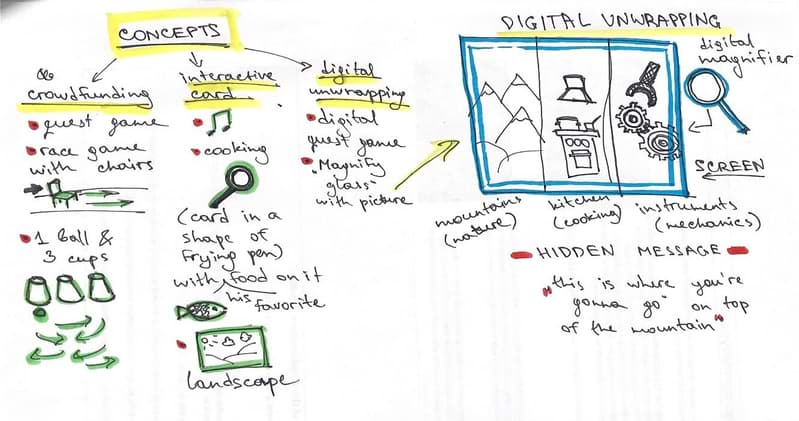
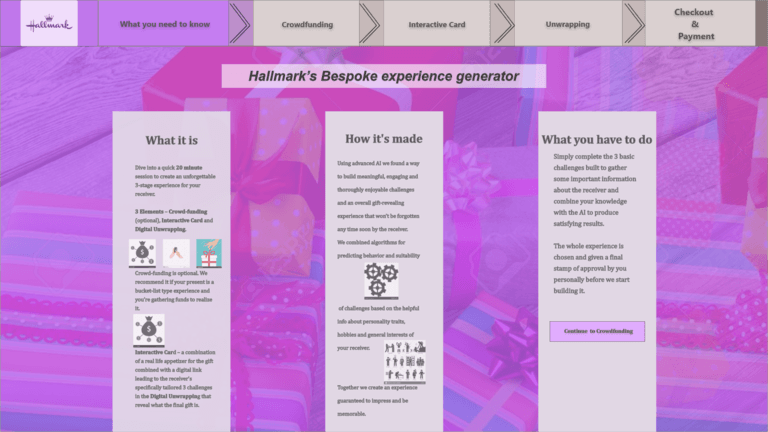

Georgi Lazarov
User expreience portfolio
Digital marketing portfolio
Steven Koopmans - online marketing manager of the Dutch branch of Hallmark, provided the problem statement: "The company seeks inspiration for connecting with a young target audience."
End
At the end, I created a new digital marketing strategy, combined with building several solutions that improved the service's usability and meaningfulnes via a custom gift generator.
The client in this self-initiated project: Zaplata.bg is the second biggest website in the field of jobs and employment in Bulgaria. I aimed to understand in depth why, despite their best efforts, they continue being number two, after Jobs.bg. This project started as a usability exercise.
Data anylysis compiled a design solution based on user-centered design, increasing usability, usefulness and meaning for the user, relieving user pain points while implementing better digital marketing strategies to cover main business goals.
Steven Koopmans -online marketing manager of the Dutch branch of Hallmark, provided the problem statement: "The company seeks inspiration for connecting with a young target audience."
End
At the end, I created a new digital marketing strategy, as well as building seveal solutions that improved the service's usability and meaningfulnes via a custom gift generator.
Steven Koopmans -online marketing manager of the Dutch branch of Hallmark, provided the problem statement: "The company seeks inspiration for connecting with a young target audience."
End
At the end, I created a new digital marketing strategy, as well as building seveal solutions that improved the service's usability and meaningfulnes via a custom gift generator.
I employ this whenever the design process requires development of concepts which are executed by the user in a natural environment.
Qualitative research explores the user's meanings, experiences and views within specific goal-based scenarios.
Interviews offer a comfortable setting for the user where invaluable data is recorder in various ways with an explorational purpose.
It makes use of a controlled group discussion on a specific topic related to the aim of the research.
Multiple types of recording are included to enrich data and allow analysis of participants' body language, tonality and facial expressions.
A trade mark of UX research. It explores and describes the views, ideas and perspectives of several participants, which are later analyzed for inspiration, insight and feature generation.
Research based on observation, with or without designer participation.
Observations aim to record, perceive and, later, analyse user behavior within a natural setting for the user.

Checking whether there is existing, high quality research data, executing traditional and the newest research techniques via the web can save time, effort and energy.
I employ the following:
A hollistic approach that follows the day to day activities of the user.
This uncovers the details of work or play within the user's process flows, interactions, protocols and criterias.
It aims to explain or theorize the reasons behind a sequence of events or a specific result.
Keywords: Interviews, existing data, identifying patterns.
Uncovers the reason, characteristics and details surrounding a certain phenomenon within the physical or digital world.
A great tool for discovering affordances.
Aims to describe behavior of larger groups of users through numeric and statistical approaches.
The accumulated data is independent from the researcher, so it's displays objective characteristics of reality.
The results can be presented in a visually clear way with little room for arguments as to their validity.
Is easy to plan, execute and are subject to all advantages good quantitative data has to offer. They inform and guide the design process, validate choices and show insights.
All about comparing two variables within a system via a statistical relationship.
Results: Identifies and describes the nature of the relationships between parts of the user experience.
Guided by a hypothesis, this type of research is excellent for early design vision validation, as a hypothesis is either proven or disproven.
Results: Explanations to different phenomena.
Emprirical data that is hard to argue with.
Data that clears, focuses and guides the research and design process forward.
Looks to uncover a cause and effect relationship. Via comparing and observing the behavior of two variables under the same effect.
Results: Possible inspiration source for all stages of the design process, possible validation for design decision or feature.
After the Qualitative research on two appropriate users, most visual insights were presented in the portrait below. Most info qualifies for the quote - "Can I design with this".
The user portrait served as a great inspiration for the later visual layout of the design solution and helped speed up the creation of the "Experience Generator".
Most of the insights of the research on Justus, gave me inspiration to experiment with the idea of genericising major elements that make up the gift-giving experience.
The insights and mostly the fact that this user wouldn't normally use Hallmark's services was an interesting turn of events as gave me freedom to experiment with many possible solutions.
This user journey map is derived from the following types of research, analysis & testing on Zaplata.bg - the second biggest job ad website in Bulgaria:
Heuristic research
Competitive reserach
Comparative analysis
Usability testing
Analytics review.

It features the more frequent problems that arise from the main user goal of the main user group: * Workers to find a job*.
The product of several ideating phases, produced an early design solution based on our users from previous research, which was the backbone idea behind the "Experience generator".
This concept solution covered the user needs in relation to making the user feel engaged visually and emotionally.
Final paper prototype version of the second main element of the gift giving experience - The Interactive Card.
Althought the card aligns quite well with the intended user' personality, it's one of the many possible variations within the "Experience generator".
Below is the experimental wireframe, a visual representation of the design solution for Hallmark.
The nav is modelled after the user-stages present when buying a plane ticket.
Text is spread out in 3 columns with enough whitespace and images to break the text monotony. The info is briefing on how to use the generator.
Skippable Crowdfunding part (if user (gift-giver) has the main present ready).
The crowdfunding generator is based on one clear user goal in mind, with minimal distractions, clear steps and engaging mechanics.
Interactive Card.
Here, and in the digital unwrapping we require basic input from the user (gift-giver) about the receiver' personality via an engaging drag&drop "game" of association.
Suggestions for the Interactive card
The previous game of association is using keywords that define the 16 personality types in the world and provide variables with which a boolean algorithm can determine the receiver' personality type and offer appropriate variations of the interactive card.
Throughout the whole generator the controls stay the same, minimizing user frustration and decreaases the chances of errors.
The Digital unwrapping part, however, requires different variables as it accounts mainly for the visual design of the card, later challenges, color palette, font, etc.
Interactive prototypes of the Digital unwrapping challenge.
They're mentally engagaing games which reveal to the gift receiver what their present is.
The visual design and nature of the challenges is build for our final user' personality. Main features - continuation of narrative, sense of suspence, sense of relatedness due to the context of the visual elements & a sense of playfulness.
This small business was in need of a new website, to showcase their value proposition - teach people German at a functioning level for public work and in elaborate conversations.

This solution was created 6 months after I'd learned about the existance of UX, a week or two after finishing my course for frond-end-developing and building the second iteration of my portfolio website.
Before the one you see.
Quick snapshots of the main page of the high-fi interactive prototype build for Deutchspunkt.
The website has a mixed structure combining the well-known design benefits for both the user and the business within a tower type main page, combined with numerous, smaller pages that provide further detail into the top questions potential clients may have.
One is a registration form for "Youshop" - best male fashion, webshop.
Semi-occasional practice for webstores (2018-9). The regisration strives to be as efficient and seamless for the user as possible.
The registration is a small part of the overall experience and not an immediate main user-goal priority therefore it is as brief as possible, as a process.
"Tripp3r" is an app heavily inspired by mechanics and form of "Google Maps" & "9292". It is made to serve directly, with little energy investment, the user's main goal, orientate himself in a way that he has no unanswered question related to getting somewhere.
All controls, navigation and chunked information serves to answer questions before they are asked.
This website was built in the same way I engage other projects - in the most methodological manner.
Below, are some examples of early paper prototypes that determine the overall layout and IA.
The new portfolio took approximately 40 working days - 8 hours or more per day - From ideation to launch.
Good design strategy = less misunderstandings, rework, resource wasting for everyone involved = more positive emotions, less chaos, more productivity.
As an INTJ personality type, strategies are second nature and are always a part of my design proccess.
Flows are documented expressions of user behavior within a specific task or activity.
They help analyze, validate and explain specifics about the design strategy in a clear visual way.
Creating Paper prototypes is an art.
They allow for usability testing to be executed early in the design process, collaborative design is easier and fun and they are quickly modifiable. Employing them saves various design resources.
Due to their constrained nature a paper prototype focuses on the important ideas.

They are more visually intricate and rich, in comparison to their paper counterpart.
Digital prototypes can offer a realistic look of the almost complete design solution, allowing for showcasing the solution to stakeholders, application of elaborate user testing.
The main goal of the website is to showcase my work in a visually engaging and efficient way.
The IA, visual design, colors, animations and interactions are largely a direct reflection of my initial vision for the website.
Speed was a major concern due to the large amount of images, JavaScript code and video. Due to this, all of the images, video and code are optimized or/and compressed - most at a 2x or 3x rate of compression to ensure fast loading.
One of the big late changes was the font.
After performing user testing I decided to use the Cheque Black (left) instead of One-day, as a main header font, due to it's better readability and the fact that it was made by another Bulgarian sealed the deal.
![drawn neon folder]()